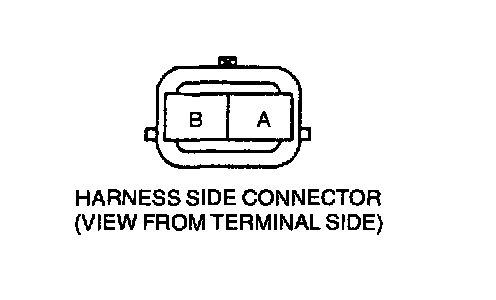

Knock Sensor: Testing and Inspection
Inspection of ResistanceNOTE:
- Perform the following test only when detected.
1. Verify that the ignition switch off.
2. Disconnect knock sensor connector.

3. Measure the resistance between knock sensor terminal A and the knock sensor body by using an ohmmeter.
Specification; Approx. 560 Kohm (20°C (68°F))
4. If not as specified, replace the knock sensor. If knock sensor is okay, but PID value is out of specification, inspect as follows:
Open circuit
- Knock sensor circuit (Knock sensor connector terminal A and PCM connector terminal 2F through common connector.)
Short circuit
- Knock sensor connector terminal A and PCM connector terminal 2F through common connector to ground.
5. Reconnect the knock sensor connector.